Due: Monday, February 9, 2004.
- 1.
- Show that a convex cone has at most one extreme point,
namely the origin.
- 2.
- Consider the subspace alternative theorem:
For
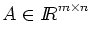
and
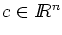,
exactly one of the
following holds:
- (a)
-
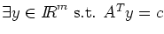
- (b)
-
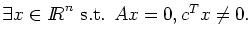
Develop a proof for this along the following lines:
First observe that both (a) and (b) can not hold simultaneously.
Thus, it suffices to show that when (a) fails, (b) must hold.
Next assume (a) fails and then construct an x which satisfies (b).
(Hint: You may assume that,
given a matrix
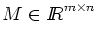
and a vector
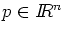,
there exist unique p' and p'' such that
p=p'+p'', Mp'=0, p''=MTq for some q, and p'Tp''=0.)
- 3.
- Let c=[1,1,0]T. Use the theorem of the alternative given in
question 2 to show that
there does not exist a y with ATy=c, where
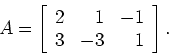
- 4.
- Let the polyhedron
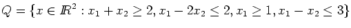.
Graph this polyhedron, and hence find matrices B and C such that
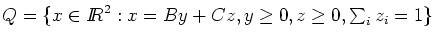.
- 5.
- Construct a linear programming problem in the standard form
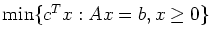
which has an optimal basis,
but, for this basis, not all the reduced costs are nonnegative.
- 6.
- Consider the linear programming problem
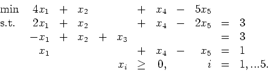
Show that this problem has unbounded objective function value by
using the revised simplex algorithm starting from the basic feasible
solution
x = [0,2,1,1,0]T. Use the eta factorization of the
inverse, so you should first factorize the initial basis B as
LB=U, where L is lower triangular and U is upper triangular.
On subsequent iterations, update the basis matrix by using eta
matrices. What is the ray that you find?
(Hint: you should find the ray on the second iteration.)
John E. Mitchell
2004-01-28